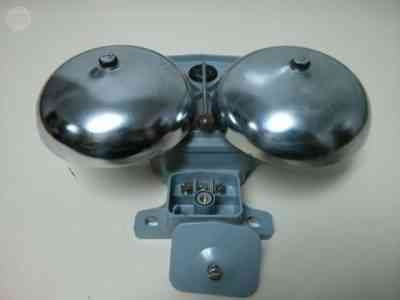

Se define como teléfono al aparato que transmite sonidos a través de señales eléctricas sin importar la
distancia, y siempre y cuando el teléfono tenga señal de alguna compañía de línea telefónica. Se invitó
en el
1871 por Antonio Meucci, pero fue en el 1876 que Alexander Graham lo patentó.
Está compuesto por un circuito de marcación que está relacionado con las llamadas, y un circuito de
conversación
encargado de la voz.
Es un instrumento que transmite señales a través de señales eléctricas, que hace posible la comunicación
entre
personas se a corta o a largas distancia.
Existe dos tipos de teléfonos, el móvil, el cual funciona de forma satelital, por tanto se llevan a
cualquier
parte y vienen con diversas aplicaciones y funciones; y los fijos que son instalados en casas y que solo
sirven para hacer o recibir llamadas.
Campana
También llamada bocina o timbre, es el oscilador o timbre que se conecta a la bocina. Esta se conecta directamente al trenzado local del lazo con dirección a la central telefónica. Es desde esta central donde se produce una señal cuando se recibe una llamada, lo cual hace que la campana suene. Los teléfonos de campaña operan a través de cables, a veces ocupando circuitos civiles cuando están disponibles, pero frecuentemente usando cables tendidos en condiciones de combate.1 Hasta la Segunda Guerra Mundial, las líneas cableadas eran el método de comunicación predilecto del Ejército de los Estados Unidos, empleando la radio solamente cuando era necesario, como por ejemplo, comunicarse con unidades móviles o hasta que los cables puedan ser tendidos. Los teléfonos de campaña pueden operar entre dos puntos, o a través de una central en un puesto de mando.2
Bobina híbrida
Se trata de un devanado que funciona como un transformador que recibe y transmite en solo un par de conductores. Circuitos de marcación Es a través de esta parte del teléfono donde el usuario puede introducir el número de teléfono a donde desea llamar. Estos circuitos han cambiado a través de los años, por ejemplo: en un principio contaba con un sistema de pulsos por discado y hoy día se usa un sistema de marcación por tonos o sistema de multi-frecuencia, donde se muestran botoneras que muestran los números a marcar.
Teclado DTMF
Se trata de cuatro teclas adicionales al sistema de marcación, el cual ofrece aplicaciones especiales. Receptor Se trata de una bocina que tiene un pequeño imán de forma permanente al cual se conecta un diafragma. En esta parte la señal eléctrica es transformada en energía acústica, lo cual ofrece la voz al oído. Transmisor Se trata del micrófono que permite hablar durante la llamada. Contiene un carbón que transforma las vibraciones acústicas en cambios de resistencia, que generan alteraciones en la corriente eléctrica del lazo local.
Interruptor de gancho
Se encarga de mantener el control del dispositivo que actúa a través del auricular del teléfono. Con este se abre o cierta los circuitos que hacen operar el teléfono, donde el auricular se mantiene en reposo cuando es colocado en este gancho.